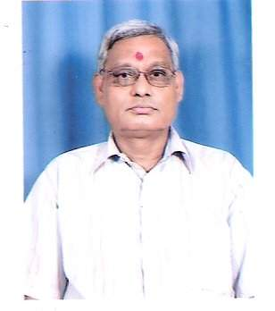

नबोनारायण मिश्र
हमर संस्मरण : रमणजी क संग
हम १९६१ ई॰ सँ मैथिली साप्ताहिक पत्रिका “विदेहा-मिहिर” के नियमित पाठक छलहुँ। “विदेहा मिहिर” मे अन्यान्य लेखकक संग डॉ॰ रमानन्द क “रमण” क आलेख यदा-कदा प्रकाशित होइत छल। हम मात्र हुनक नाम सँ परिचित छलहुँ। ओ नीक लेखक आ रिजर्व बैंक, पटनाक उच्च आधिकारी छथि से सुनल छल।
१९८० ई॰ क पश्चात कौशिकी रंगमंच कर्मकर्ता क वार्षिक आयोजन (नाट्य-मंचन) मे हुनका सम्मिलित होबाक लेल पत्राचार नियमितरूपे करैत छलहुँ।
इएह प्रथम दर्शन सौभाग्य रहि गेल जाहि सँ स्मरण, नाजि अछि मुदा ओ जड़िया कलकत्ता आबकाल नहि छोड़ब पत्र द्वारा अवश्य सूचित करैत छलाहुँ। रहओ अवसर कतेको बेर आगाँ जाहि मे हमरा हुनिका सँ भेंट भेल।
किन्तु विशेष अवसर पर हुनिका सँ भेंट भेल तखन चर्चा हम हमरा करय पाओब जे हमरा लेल चिरस्मरणीय भेल।
(१) “स्वर्णकांति दीपजयंती” कथा-गोष्ठी मे हुनक भूमिका महत्वपूर्ण रहैत छल। ओहि गोष्ठी मे हम बलाईन, बोकारो, राँची आ कलकत्ता मे रहए छलहुँ।
एक न एक अवश्य उल्लेखनीय जे “कथा-गोष्ठी” कलकत्ता द्वारा “स्वर्णकांति दीपजयंती” के कथा अंतर्गत ६६म आयोजन दि॰ २९ जनवरी २००३ मे भेल जकर अध्यक्षता रमानन्द क “रमण” कएलनि। उहि अवसर पर डॉ॰ गोविन्द झा आ लेखिका जीबी “आलाप” क लोकार्पण रमानन्द रेणु कएने छलाह आ कथा-पाठ मे हम अपन कथा प्रस्तुत करने रही।
[टीप]
कथाकार छलाह (राजनन्दन लाल दास, रमानन्द रेणु, नवीन चौधरी, रामलोचन ठाकुर, रमानन्द क “रमण”) आ कथा-पाठ करैत छला (नबीनारायण मिश्र)।
(२) ३० अगस्त २००६
भारतीय भाषा संस्थान (Central Institute of Indian Languages) क दिशा मे सम्मिलित होबाक लेल शताब्दी एक्सप्रेस सँ हावड़ा आयल छलाह सर्वश्री पंडित गोविन्द झा, डॉ॰ वासुकीनाथ झा, डॉ॰ गोकुलनाथ झा, डॉ॰ सुभाषचन्द्र यादव आ डॉ॰ रमानन्द क “रमण”। ओहि दिन सब गोटे यात्री-निवास मे सकल छलाह।
पूर्व सूचना अनुसार रामलोचन ठाकुर जी के निर्देश पर हम किशोर सुखनजी, मिथिलेशजी, अनमोलजी, कुमारनाथ “गरीबी” आ अरुण कुमार सिंह के सूचित कएने रहिऐंहि।
ओहि अवधि मे नवीन भोजनी नर्सिंग होम मे भर्ती छलाह आ लछमन आ “सागर” जी आकस्मिक कारणें कलकत्ता सँ बाहर गेल छलाह। हुनकर संयोग सुखद जे जखिने सागरजी कलकत्ता पहुँचि गेलाह आ हमरा सँ फोन पर बात भेलनि तखनुसार दोसर दिन सागरजी क ऑफिस सँ सउँ करैत हावड़ा पहुँचि गेल छलहुँ।
हमरा सँ पहिने डॉ॰ बीरेन्द्र मल्लिक आ रामलोचन ठाकुर पहुँचल छलाह। पुनः अरुण सिंह सेहो आबि गेलाह।
रमानन्द क “रमण” जी हम सभ लोकनि के सब अतिथि-पुरुष सँ परिचय करौलनि। तत्पश्चात ओ सभ चिरस्मरणीय साहित्यिक गोष्ठी मे परिणत भ गेल।
डॉ॰ बीरेन्द्र मल्लिक जी कालिदासक “मेघदूत” क सांगोपांग वर्णन करय लगलाह आ हम सभ मंत्रमुग्ध भऽ ओकर रसास्वादन करैत रहलहुँ। गोष्ठीक समापन होइत राति ... बाजि गेल छल आ आगन्तुक अतिथि लोकनि राति दस बजे भुवनेश्वर हेतु प्रस्थान कएलनि।
चेतना समिति, पटना प्रत्येक वर्ष विद्यापति-पर्वक अवसर पर अपन मनीषी के मैथिली-विभूति सम्मान सँ सम्मानित करैत रहल अछि।
ताहि क्रम मे डॉ॰ श्रीमती अंजिमा सिंह के निमंत्रण-पत्र पठाओल गेल मुदा प्रो॰ प्रबोध बाबूक अकस्मात कारणें ओ पटना नञि पहुँचि सकल छलीह। अस्तु चेतना समितिक प्रतिनिधि डॉ॰ रमानन्द क “रमण” मान-पत्र आ शाल ले डॉ॰ श्रीमती अंजिमा सिंह के सम्मानित करबाक हेतु कलकत्ता आयल छलाह।
एहि सारस्वत अभियानक साक्षी बनबाक सौभाग्य हमरो प्राप्त भेल जाहि मे “रमण” जी, हम, राजनन्दन लाल दास आ रामलोचन ठाकुर समेत चारू गोटे प्रबोध बाबूक निवास-स्थान लेक गार्डेन्स पहुँचल रही। सहज आविष्करणीय सुरुचिपूर्ण आपण मे बड़ धैर्य भेंट देल।
हमरा दृष्टि सँ रमानन्द क “रमण” मैथिली साहित्यक प्रमुख साहित्यकार, आलोचक, शोधकर्मी आ संपादक रूप मे बहुचर्चित छथि।
सृजनात्मक लेखनक अतिरिक्त मैथिली भाषा, शैली आ संस्कृति पर गंभीर अध्ययन क संगहि आलोचनाक क्षेत्रमे वैज्ञानिक शोधपरक दृष्टि प्रदान कएलनि अछि।
हिनक आलेख समसामयिक विचारोत्तेजक संग आलम-मंथन लेल निश्चय बाध्य करैत अछि।
आलोचनाक क्षेत्र मे आचार्य रमानाथ झा, मोहन भारद्वाज आ रमानन्द क “रमण” के नाम श्रद्धापूर्वक लेल जाइत अछि।
हुनक महत्वपूर्ण कार्य रचना-संसार देखलापर स्पष्ट होइत अछि। पौष्टिक विवरण निम्नलिखित देल जाइछ।
रचना-संसार
(१) मैथिली आरक्षित कथा — (सम्पादन)
(२) रूपानन्द रचनावली — (सम्पादन)
(३) जनार्दन क “जनसीदन” कृत “निर्दयी सासु” आ पुनर्विवाह — (सम्पादन)
(४) फणि चेतनाक कृत “श्री जानकीपुरी यात्रा” — (सम्पादन)
(५) रुचिरता संत नैन फुरसि — (सम्पादन)
(६) नवीन मैथिली कविता — (समीक्षा)
(७) मैथिली नव कविता — (समीक्षा)
(८) मैथिली साहित्य आ राजनीति — (समीक्षा)
(९) अर्खिपासल — (समीक्षा)
(१०) मौलिकेतर दू नाटक — (अनुवाद)
अन्यान्य उपलब्धि के अतिरिक्त मैथिली साहित्यकार आ समाजसेवी लोकनिक अवदान के सहेजि क रखने अछि जे आन कोनो लोक नञि करैत अछि। जिनकर अवदान मरि चुकल छथि तिनका नामे हुनक पुण्य-तिथि पर “मौन पड़ैत अछि” शीर्षक सँ आ जीवित लोकक जन्म-दिवस पर “युग युग जीवि” शीर्षक सँ चेतना समिति, पटनाक मुखपत्र त्रैमासिक पत्रिका “घर-बाहर” मे नियमितरूप सँ प्रकाशित करैत अछि जकर ओ स्वयं संपादक सेहो अछि।
सोसल मीडिया (फेसबुक) पर सेहो साहित्यक नियमितरूप सँ उल्लेख करैत अछि मुदा सहजहि हुनिका पर दोषारोपण करैत जे “बाबू साहेब चौधरी” सन कहानी मैथिली आन्दोलनी आ नाटककार के नाम ओहि सूची मे सम्मिलित नञि रहैत अछि।
ओना साहित्यकारक प्रति हुनक दायित्व-बोध सर्वविदित अछि आ तकरे परिणामें पंडित गोविन्द झा आ प्रो॰ आनन्द मिश्रक सान्निध्य हिनका दीर्घअवधि धरि भेटलनि।
“रमण” जी के विषय मे दू गोट विशिष्ट साहित्यकार सँ हमरा बात भेल तकर बानगी निम्नलिखित अछि।
(१) रामलोचन ठाकुर के मन्तव्य :-
“रमण” जी हमर प्रिय लोक आ नीक समीक्षक अछि मुदा एकटा दोष जे ओ अन्य लोकक अपेक्षा श्रीविज समाजक कार्य के कैसो उजागर करैत अछि ताहि लेल आ निरपेक्ष नञि रहि पबैत अछि।
(२) राजनन्दन लाल दासक मन्तव्य :-
“रमण” जी हमर बहुत घनिष्ट आ सहयोगी लोक अछि। हम हुनिका मैथिली साहित्यक पंजीकार जानैत छी। मैथिली साहित्यक दुर्लभ वस्तु जे कतहु उपलब्ध नञि रहत सेहो खोजि क लोक-स्रोत आनि देताह। हुनक जीवनमे प्रयोजन भेल सँ खोजि पहुँचा देल अछि।
वस्तुतः ओ खोजी प्रवृत्तिक लोक अछि जे अन्य साहित्यकार सँ अलग बनबैत अछि।
नबी नारायण मिश्र
पूर्व सचिव,
कौशिकी रंगमंच, कलकत्ता
Mob – 9330173348
अपन मंतव्य editorial.staff.videha@zohomail.in पर पठाउ।